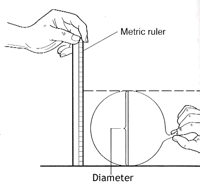
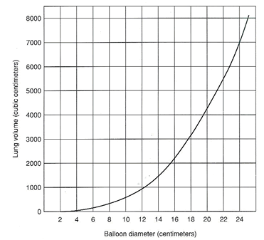

(from http://www.biologycorner.com/worksheets/lungcapacity.html) by Shannan Muskopf, Granite City High School,
| The amount of air that you move in
and out of your lungs while breathing normally is called TIDAL VOLUME. This
amount of air provides enough oxygen for a person who is resting. It is
possible to inhale and exhale more forcefully - the maximum amount of air
moved in and out of the lungs is called the VITAL CAPACITY. In this activity,
you will be measuring the vital capacity and the tidal volume of your own
lungs, this actual number can then be compared with a number derived from
an equation that measures vital capacity. In effect, you are measuring an
actual number, based on laboratory measurements, to a theoretical number,
based on an equation. If you have any breathing difficulties (asthma or
other condition), you should not participate in this activity, instead only
take the data on your lab partner.
Materials Balloons, metric ruler, meter stick, bathroom scale (optional) |
 |
|
1. Measuring Tidal Volume -- Stretch a round balloon several times to stretch it out. Inhale normally and then exhale normally into the balloon. Do not force your breathing. Pinch the end of the balloon and measure its diameter. Repeat this so that you have 3 total measurements and can take the average and record in the data table. 2. Measuring Vital Capacity - Repeat the procedure, only this time inhale as much air as you can and exhale forcefully. Record three measurements in the data table. 3. Convert the diameters to a volume using the graph and record this in your table.
|
 |
4. Estimated Vital Capacity
Research has shown that the capacity of a person's lungs is proportional to the surface area of his or her body. To find the surface area, you will need to know your height and weight. Use the equation here to calculate your BSA.
Once you have calculated your surface area (SA), a second equation will calculate your estimated vital capacity.
Males: SA x 2500
Females SA x 2000
|
Tidal
Volume
|
Vital
Capacity
|
Estimated
Vital Capacity
|
|||||||||||
| Balloon Diameter | Volume (from graph) | Balloon Diameter | Volume (from graph) |
|
|||||||||
|
Trial
|
|||||||||||||
|
1
|
|||||||||||||
|
2
|
|||||||||||||
|
3
|
|||||||||||||
|
Average
|
|||||||||||||
1. Why is it important to measure tidal volume and vital capacity three times and then get an average?
2. Compare your data to other members of the class. How can you account for differences?
3. How does your measured vital capacity compare to the vital capacity you estimated using the formula? Which do you think is more accurate and why?
4. How might an athlete's vital capacity compare to a non-athlete? Explain your reasoning.
1. Examine the data table of a person who entered into a training program. This person's vital capacity was measured over a 60 day period. Use the data to construct a graph
|
DATA
|
GRAPH
|
2. What happened to the person's vital capacity over the course of the training period?
3. What probably caused the change?
4. How might vital capacity be important to a musician?